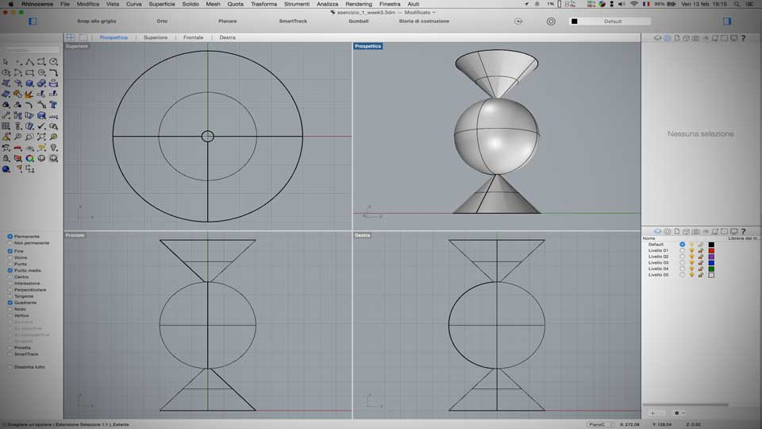
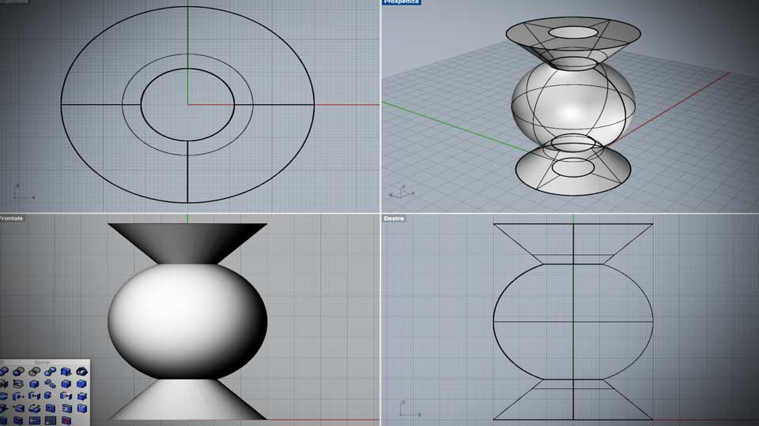
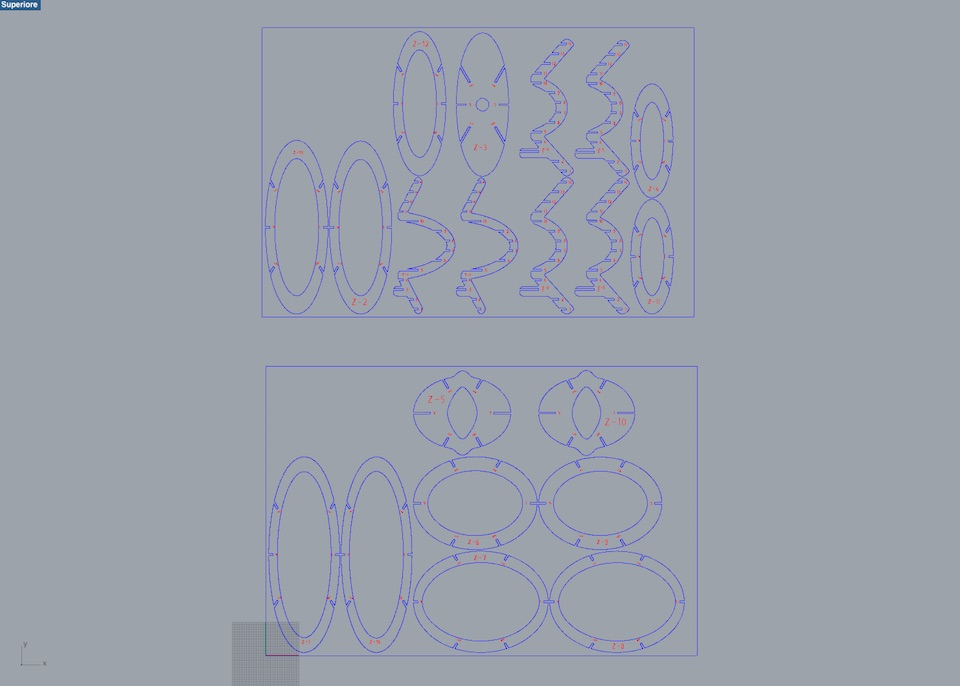

****************************************************************************************************************
ASSIGNMENT: DESIGN MAKE AND DOCUMENT A PRESS-FIT CONSTRUCTION
PROJECT:FAB READING LAMP
SOFT: 123D MAKE // GIF FUN // RHINOCEROS // GIMP // INKSCAPE
MACHINE: GCC SPIRIT GLS
MATERIAL: CARDBOARD 5.5 mm FOR PROTOTYPE // PLYWOOD 4 mm FOR REAL MODEL
DOWNLOAD:
****************************************************************************************************************
PART 1 --> USE RHINOCEROS FOR MODELLING THE 2D/3D STRUCTURE OF MY LAMP
Rhinoceros (abbreviated Rhino) is a commercial computer-aided design (CAD) application software. The Os X version unfortunaly don’t integrate Grasshopper, a parametric modeling tool.
I have started to work combining samples solids. My first idea was easy: do a reading lamp whit the combination of 3 solids: 2 cones, 1 mirrored to the other one, with a sphere inside.

After create this sample composition, I started to try to develop the forms using some Rhino commands.
Whit the use of Booleans operations, I was emptied my composite solid.

And with the command "Scale 3D" I tried to screch the solid.

This is the result of my work.
On reality I am not very happy of the outcome. The structure is not very elegant. But considering that it is my first exercise, for the moment, I’m settling of this.
PART 2 --> Use 123D Make software for sliding the solid
The second step until the fisical realisation of the model is to turn 3D models into 2D build plans and decomposed it in horizontals and verticals slides.
I do this by using 123D Make software, a real simple software.
It works good, but I have the impression that use this soft is not real instructive.
Everything is automatized.


PART 3 --> Use GCC Spirit GLS Laser Machine to cut the the part of structure
The ferst step until the fisical realisation of the model, is to open the dxf or pdf file exported from 123D MAKE in Ryno

In Opendot Fab Lab we use Rhino for control the GCC Laser Spirit GLS machine. Like a lot of other machine for the digital fabrication, the laser cutter is recognize like a normal printer.
Until to push "PRINT", for opening the dialog windows of machine, is important to choose the color of the layer of 2D plans, to enable a clear distinction between the cut line and the engraving line.
*** Blue --> Engraving lines
*** Red --> Cutting lines
--> REALIZATION OF A PROTOTYPE IN CARDBOARD 5.5 mm
After same test I have setting our Spirit GLS in the following way:
*** Blue Engraving line --> Speed 80% power 100%
*** Red Cutting line --> Speed 6% power 100%
Just until cutting the model, I realized that the cardboard that I have found have a different thickness compared to the set up one in the Rhino project.
My original Rhino project was designed for use 4mm thickness material. The cardboard that I have found was 5.5mm.
Given the short deadline, I have decided to do the laser cut however.

The result has been, obviously, that was not possible to assemble the parts of my lamp.
Good heavens!!! I need a solution.
Whit a really analogical system, a rolling pin, I decided to try to flatten the parts of my cardboard structure. --(Please avoid easy ironies respect my Italian origin :-)--


The miniature was assembled in over 2 hours of work.


--> REALIZATION OF A PROTOTYPE IN PLYWOOD 4mm
After same cutting test, I have setting the laser cutter in the following way:
*** Blue engraving line: speed 100% power 30%
*** Red cutting line: speed 50% power 100%

In this case the process has worked well, and the assemblage is simple.


The process of assemblage is documented follow whit a little gif animation.